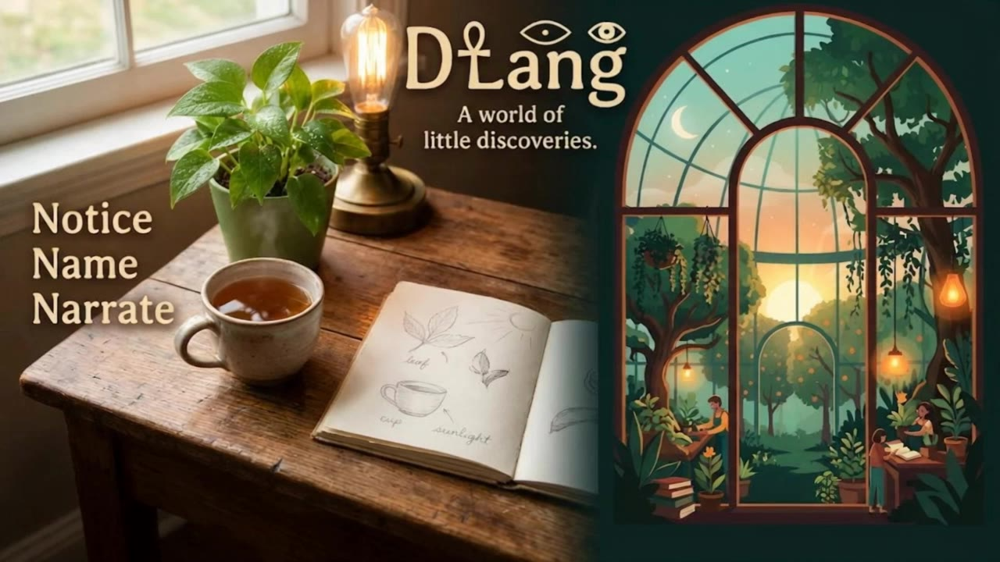

DLang. A world of little discoveries.

A LITTLE CURIOSITY. A WORLD IN COMMON.
See something. Say something.
Find your words, together.
Three small encounters a day. Many ways to see the same world.
YOUR DAILY RHYTHM · FREE PRACTICE
A little, three times a day.
Three flexible two-minute sessions each local day. Touch an object, hear its name and repeat it. Tell us what you remembered; reviews return after 1, 3, 7, 14, 30 and 60 days. “Again” brings a concept back sooner. This is self-review, not pronunciation grading or paid-round scoring.
Larger touch controls
No wallet needed. New compositions, mixed object order and a 21-session image cooldown.
THE SCENE LIBRARY
365 days. 1,095 ways to look.
72 concepts, six growing levels. Explore different scenes, colors and appearances as the same familiar words return.
About these illustrations
1,095 reproducible SVG compositions, not separately painted images. The first week repeats twelve home objects; counting, feelings, colors and first verbs gradually join them. Vocabulary awaits fluent-speaker review.
THE FAMILY WORD MAP
Say it in every language you study.
THE FIRST WEEK · LEVEL 1
Upcoming round
Wallet optional for study · not connected
Pilot enrollment requires an explicit check against the reviewed DLang pilot snapshot. No automatic authorization or live registry synchronization.
A FIELD GUIDE, NOT A FLASHCARD DECK
Explore before Go
The same twelve concepts recur in seven distinct scenes and visual versions. Every appearance is an original SVG exemplar. Select a scene object to reveal its labels in all selected languages. Seed translations: fluent-speaker review pending.
Hindi uses Devanagari. Mandarin uses Simplified Chinese with pinyin shown for study; scored Mandarin answers require Chinese characters, not pinyin. All five packs are seed content pending fluent-speaker review.
Accessible object list / larger touch controls
ONE ATTEMPT · EXPLICIT GO · 120 SECONDS
Today’s observation
Keyboard / touch object list (numbered, no answers)
FinishLine · you noticed something new
Missed days score zero. Daily boundaries use the configured round timezone, not your browser timezone. A late Go is capped at day turnover. Reload resumes the same deadline; it never grants a second attempt.
DESIGNED FOR $1 · NOT A FINANCIAL SERVICE
A shared commitment, not a payment button.
84 equally weighted object answers. Qualifying requires 76/84; 75/84 does not qualify. Stories do not affect scores. Qualified friends recover their own $1 principal plus equal shares of forfeitures and prior carryover. If nobody qualifies, all forfeitures and carryover roll forward.
Integer-cent illustration only: Remainders are explicitly unresolved, not silently awarded. Asset/network, fees/custody, dust, cancellation/refunds, outages/disputes, trusted scoring and settlement/security review must be resolved before activation.
Level 1 is the only content candidate. Future $2 / $3 harder levels are reserved architecture, not active curricula or offers.